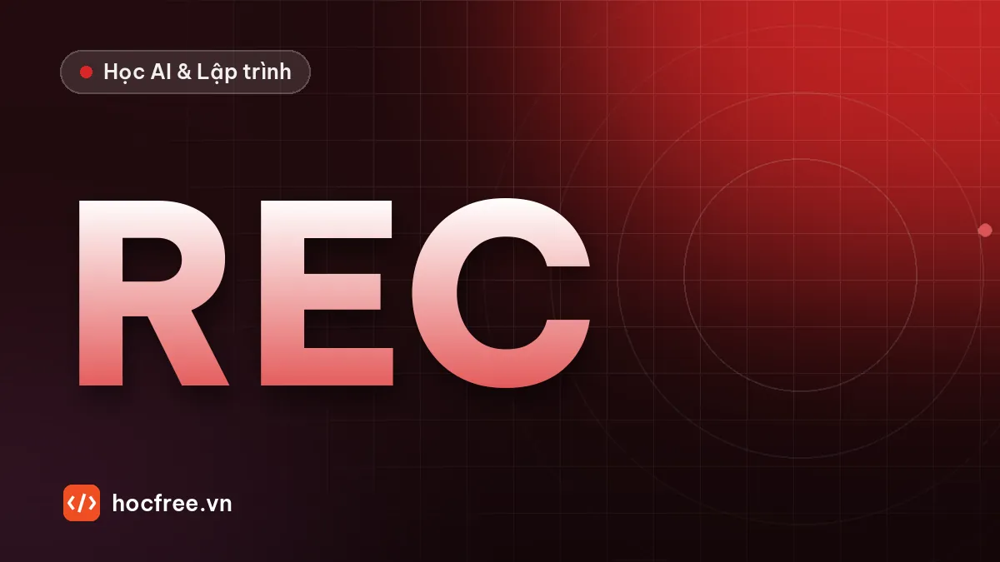

Dự án chặng 2: công cụ chụp và lưu ảnh kiểm tra OK/NG bằng OpenCV
Đọc camera hoặc video, chọn ROI bằng chuột, lưu ảnh OK/NG theo ngày bằng một phím, hiển thị FPS, độ sáng, độ nét: công cụ thu dữ liệu cho mọi dự án Vision.

Học xong bài này, bạn sẽ
- Đọc camera, chọn ROI bằng chuột
- Lưu ảnh OK/NG vào thư mục có cấu trúc
- Hiển thị thông tin trực tiếp trên khung hình
Nên học trước: Tổ chức pipeline xử lý bằng hàm và cấu hình
Nội dung bài viết
Dự án cuối chặng 2: bạn sẽ viết công cụ chụp ảnh dữ liệu. Mọi dự án Vision, từ chỉnh ngưỡng rule-based đến huấn luyện AI, đều bắt đầu bằng việc thu ảnh. Công cụ này đọc camera (hoặc video), cho chọn vùng quan tâm bằng chuột, lưu ảnh OK/NG vào thư mục có cấu trúc chỉ bằng một phím bấm, và hiển thị thông tin ngay trên khung hình. Bạn sẽ dùng lại nó ở chặng 11 khi xây dataset cho AI.
1. Yêu cầu
| # | Yêu cầu |
|---|---|
| 1 | Chạy bằng python chup_anh.py 0 (camera số 0) hoặc python chup_anh.py video.mp4. |
| 2 | Phím r: chọn ROI bằng chuột; ROI lưu vào chup_anh.json để lần sau dùng lại. |
| 3 | Phím o / n: lưu ảnh ROI vào dataset/<ngày>/OK/ hoặc .../NG/, tên file gồm thời gian đến mili giây, không bao giờ ghi đè. |
| 4 | Lưu ảnh gốc chưa vẽ (không lưu ảnh đã vẽ khung, chữ). |
| 5 | Hiển thị trên khung hình: khung ROI, FPS, số ảnh OK/NG đã lưu, độ sáng và độ nét của ROI, phím tắt. |
| 6 | Phím q hoặc hết video: thoát, giải phóng camera, in tổng kết. |
2. Kiến thức sử dụng
- Đọc camera, video,
waitKey(chặng 2, bài 1). - Cắt ROI an toàn (bài 3), vẽ chữ và khung (bài 4), cấu hình JSON (bài 5).
pathlib,datetime, chia hàm (chặng 1).- Mới:
cv2.selectROIcho người dùng kéo chuột chọn vùng, trả về(x, y, w, h).
3. Gợi ý thiết kế
mo_nguon(arg) → cv2.VideoCapture từ số camera hoặc đường dẫn
doc_roi() / luu_roi(roi) → đọc/ghi ROI trong chup_anh.json
chi_so(vung) → (độ sáng, độ nét) của ảnh ROI
luu_anh(vung, nhan) → ghi file vào dataset/<ngày>/<nhãn>/, trả đường dẫn
ve_thong_tin(khung, ...) → vẽ ROI và chữ lên BẢN SAO của khung hình
main() → vòng lặp đọc khung → hiển thị → xử lý phímĐiểm dễ sai nhất: cv2.waitKey() trả về mã phím, phải so với ord("o"). Và chỉ gọi waitKey một lần mỗi vòng lặp, lưu vào biến rồi so sánh.
4. Lời giải mẫu
Xem lời giải đầy đủ (chup_anh.py)
"""Công cụ chụp ảnh dữ liệu OK/NG từ camera hoặc video.
Chạy: python chup_anh.py 0 (camera số 0)
python chup_anh.py video.mp4 (file video)
Phím: r chọn ROI · o lưu OK · n lưu NG · q thoát
"""
import json
import sys
import time
from datetime import datetime
from pathlib import Path
import cv2
import numpy as np
FILE_CAU_HINH = Path("chup_anh.json")
THU_MUC_GOC = Path("dataset")
CUA_SO = "Chup anh kiem tra"
def mo_nguon(arg: str) -> cv2.VideoCapture:
nguon = int(arg) if arg.isdigit() else arg
cap = cv2.VideoCapture(nguon)
if not cap.isOpened():
raise SystemExit(f"Không mở được nguồn video: {arg}")
return cap
def doc_roi():
if FILE_CAU_HINH.exists():
roi = json.loads(FILE_CAU_HINH.read_text(encoding="utf-8")).get("roi")
if roi:
return tuple(roi)
return None
def luu_roi(roi) -> None:
FILE_CAU_HINH.write_text(json.dumps({"roi": list(roi)}, indent=2), encoding="utf-8")
def cat_roi(khung, roi):
if roi is None:
return khung
x, y, w, h = roi
cao, rong = khung.shape[:2]
x1, y1, x2, y2 = max(0, x), max(0, y), min(rong, x + w), min(cao, y + h)
return khung[y1:y2, x1:x2] if x1 < x2 and y1 < y2 else khung
def chi_so(vung) -> tuple[float, float]:
xam = cv2.cvtColor(vung, cv2.COLOR_BGR2GRAY)
return float(xam.mean()), float(cv2.Laplacian(xam, cv2.CV_64F).var())
def luu_anh(vung, nhan: str) -> Path:
bay_gio = datetime.now()
thu_muc = THU_MUC_GOC / bay_gio.strftime("%Y-%m-%d") / nhan
thu_muc.mkdir(parents=True, exist_ok=True)
duong_dan = thu_muc / f"{bay_gio.strftime('%H%M%S_%f')[:-3]}_{nhan}.png"
dem = 1
while duong_dan.exists(): # phòng khi bấm 2 lần trong cùng 1 ms
duong_dan = duong_dan.with_name(f"{duong_dan.stem}_{dem}.png")
dem += 1
cv2.imwrite(str(duong_dan), vung)
return duong_dan
def ve_thong_tin(khung, roi, fps, dem, sang, net):
ve = khung.copy()
if roi:
x, y, w, h = roi
cv2.rectangle(ve, (x, y), (x + w, y + h), (0, 220, 255), 2)
dong = [f"FPS {fps:4.1f} OK {dem['OK']} NG {dem['NG']}",
f"Sang {sang:5.1f} Net {net:7.1f}",
"r: chon ROI o: luu OK n: luu NG q: thoat"]
for i, chu in enumerate(dong):
y = 28 + i * 26
cv2.putText(ve, chu, (12, y), cv2.FONT_HERSHEY_SIMPLEX, 0.6, (0, 0, 0), 4, cv2.LINE_AA) # viền đen
cv2.putText(ve, chu, (12, y), cv2.FONT_HERSHEY_SIMPLEX, 0.6, (255, 255, 255), 1, cv2.LINE_AA)
return ve
def main(arg: str = "0") -> dict:
cap = mo_nguon(arg)
roi = doc_roi()
dem = {"OK": 0, "NG": 0}
fps, t_truoc = 0.0, time.perf_counter()
try:
while True:
co, khung = cap.read()
if not co:
print("Hết video hoặc mất kết nối camera")
break
bay_gio = time.perf_counter()
fps = 0.9 * fps + 0.1 / max(bay_gio - t_truoc, 1e-6) # FPS làm mượt
t_truoc = bay_gio
vung = cat_roi(khung, roi)
sang, net = chi_so(vung)
cv2.imshow(CUA_SO, ve_thong_tin(khung, roi, fps, dem, sang, net))
phim = cv2.waitKey(1) & 0xFF
if phim == ord("q"):
break
if phim == ord("r"):
chon = cv2.selectROI(CUA_SO, khung, showCrosshair=True)
if chon[2] > 0 and chon[3] > 0:
roi = tuple(int(v) for v in chon)
luu_roi(roi)
print("ROI mới:", roi)
elif phim in (ord("o"), ord("n")):
nhan = "OK" if phim == ord("o") else "NG"
p = luu_anh(vung, nhan) # lưu ảnh gốc, không phải ảnh đã vẽ
dem[nhan] += 1
print(f"Đã lưu {p}")
finally:
cap.release()
cv2.destroyAllWindows()
print(f"Tổng kết: {dem['OK']} ảnh OK, {dem['NG']} ảnh NG trong {THU_MUC_GOC}")
return dem
if __name__ == "__main__":
main(sys.argv[1] if len(sys.argv) > 1 else "0")Giải thích các điểm đáng học
cv2.waitKey(1) & 0xFF: trên một số hệ thống,waitKeytrả về số lớn hơn 255; phép& 0xFFgiữ lại 8 bit thấp để so sánh vớiord()cho đúng.try/finallyđảm bảocap.release()luôn chạy. Quên giải phóng camera thì lần chạy sau báo "camera đang bận".- Lưu
vung, không lưu ảnh đã vẽ: ảnh dữ liệu dính khung vàng và chữ sẽ làm hỏng việc huấn luyện AI sau này. - Tên file theo thời gian đến mili giây + vòng
whilekiểm tra tồn tại: không bao giờ ghi đè ảnh đã chụp. - FPS làm mượt bằng trung bình trượt hàm mũ (
0,9·cũ + 0,1·mới): số hiển thị ổn định, dễ đọc. - Chữ có viền đen (vẽ hai lần: dày màu đen, mỏng màu trắng): đọc được trên mọi nền, sáng hay tối.
5. Chạy thử không cần camera
Tạo nhanh một video thử 3 giây có vật chuyển động, rồi chạy công cụ trên video đó:
import cv2
import numpy as np
viet = cv2.VideoWriter("video_thu.avi", cv2.VideoWriter_fourcc(*"MJPG"), 30, (640, 480))
for i in range(90):
khung = np.full((480, 640, 3), 60, np.uint8)
cv2.circle(khung, (50 + i * 6, 240), 40, (220, 220, 220), -1)
viet.write(khung)
viet.release()
print("Đã tạo video_thu.avi")python chup_anh.py video_thu.avi6. Tự đánh giá
| Tiêu chí | Đạt khi |
|---|---|
| Nguồn | Chạy được với cả webcam và file video; báo lỗi rõ khi nguồn không mở được |
| ROI | Chọn ROI, tắt chương trình, mở lại vẫn nhớ ROI |
| Lưu ảnh | Bấm o 10 lần liên tục có đủ 10 file khác nhau, ảnh không có khung vẽ |
| Hiển thị | FPS, độ sáng, độ nét thay đổi khi che camera hoặc làm mờ ống kính |
| Thoát sạch | Nhấn q, chạy lại ngay không bị lỗi camera bận |
7. Mở rộng
- Phím Space bật/tắt chế độ chụp tự động mỗi 0,5 giây (dùng khi cần nhiều ảnh nền OK).
- Cảnh báo đỏ trên màn hình khi độ nét thấp hơn ngưỡng: nhắc người chụp lấy nét lại trước khi lưu.
- Ghi file
nhat_ky.csvmỗi lần lưu ảnh: thời gian, nhãn, độ sáng, độ nét, đường dẫn. Dữ liệu này rất hữu ích khi phân tích dataset ở chặng 11.
Hoàn thành dự án này là bạn đã xong chặng 2: OpenCV. Chặng tiếp theo đi vào xử lý ảnh thực thụ: histogram, lọc nhiễu, tìm cạnh, phân ngưỡng, contour.